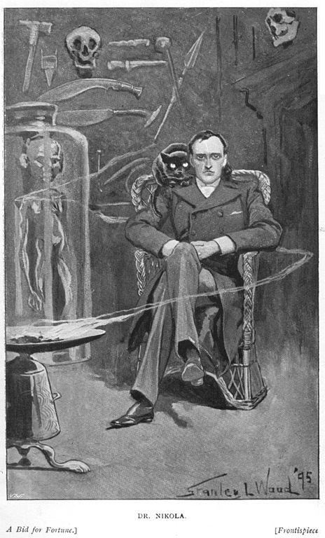
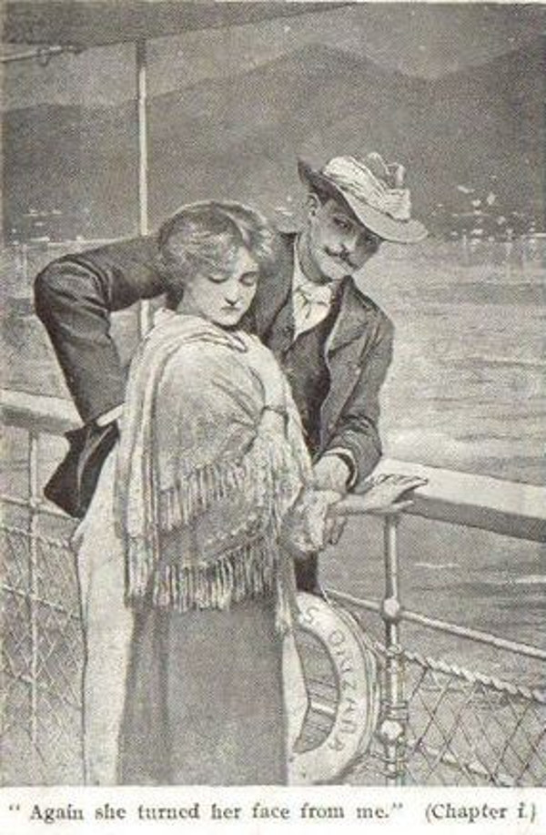

A BID FOR FORTUNE OR; DR. NIKOLA'S VENDETTA
Author of “Dr. Nikola,” “The Beautiful White Devil,” etc., etc.

The Project Gutenberg EBook of A Bid for Fortune, by Guy Boothby
This eBook is for the use of anyone anywhere at no cost and with almost no restrictions whatsoever. You may copy it, give it away or re-use it under the terms of the Project Gutenberg License included with this eBook or online at www.gutenberg.org
Title: A Bid for Fortune or Dr. Nikola’s Vendetta
Author: Guy Boothby
Release Date: May 29, 2007 [EBook #21640]
Language: English
Produced by Marilynda Fraser-Cunliffe, Mary Meehan and the Online Distributed Proofreading Team at http://www.pgdp.net
Originally published by:
WARD, LOCK & CO., LIMITED LONDON, MELBOURNE AND TORONTO 1918

PART I
PROLOGUE
The manager of the new Imperial Restaurant on the Thames Embankment went into his luxurious private office and shut the door. Having done so, he first scratched his chin reflectively, and then took a letter from the drawer in which it had reposed for more than two months and perused it carefully. Though he was not aware of it, this was the thirtieth time he had read it since breakfast that morning. And yet he was not a whit nearer understanding it than he had been at the beginning. He turned it over and scrutinized the back, where not a sign of writing was to be seen; he held it up to the window, as if he might hope to discover something from the water-mark; but there was nothing in either of these places of a nature calculated to set his troubled mind at rest. Then he took a magnificent repeater watch from his waistcoat pocket and glanced at the dial; the hands stood at half-past seven. He immediately threw the letter on the table, and as he did so his anxiety found relief in words.
“It’s really the most extraordinary affair I ever had to do with,” he remarked. “And as I’ve been in the business just three-and-thirty years at eleven a.m. next Monday morning, I ought to know something about it. I only hope I’ve done right, that’s all.”
As he spoke, the chief bookkeeper, who had the treble advantage of being tall, pretty, and just eight-and-twenty years of age, entered the room. She noticed the open letter and the look upon her chief’s face, and her curiosity was proportionately excited.
“You seem worried, Mr. McPherson,” she said tenderly, as she put down the papers she had brought in for his signature.
“You have just hit it, Miss O’Sullivan,” he answered, pushing them farther on to the table. “I am worried about many things, but particularly about this letter.”
He handed the epistle to her, and she, being desirous of impressing him with her business capabilities, read it with ostentatious care. But it was noticeable that when she reached the signature she too turned back to the beginning, and then deliberately read it over again. The manager rose, crossed to the mantelpiece, and rang for the head waiter. Having relieved his feelings in this way, he seated himself again at his writing-table, put on his glasses, and stared at his companion, while waiting for her to speak.
“It’s very funny,” she said. “Very funny indeed!”
“It’s the most extraordinary communication I have ever received,” he replied with conviction. “You see it is written from Cuyaba, Brazil. The date is three months ago to a day. Now I have taken the trouble to find out where and what Cuyaba is.”
He made this confession with an air of conscious pride, and having done so, laid himself back in his chair, stuck his thumbs into the armholes of his waistcoat, and looked at his fair subordinate for approval. Nor was he destined to be disappointed. He was a bachelor in possession of a snug income, and she, besides being pretty, was a lady with a keen eye to the main chance.
“And where is Cuyaba?” she asked humbly.
“Cuyaba,” he replied, rolling his tongue with considerable relish round his unconscious mispronunciation of the name, “is a town almost on the western or Bolivian border of Brazil. It is of moderate size, is situated on the banks of the river Cuyaba, and is considerably connected with the famous Brazilian Diamond Fields.”
“And does the writer of this letter live there?”
“I cannot say. He writes from there—that is enough for us.”
“And he orders dinner for four—here, in a private room overlooking the river, three months ahead—punctually at eight o’clock, gives you a list of the things he wants, and even arranges the decoration of the table. Says he has never seen either of his three friends before; that one of them hails from (here she consulted the letter again) Hang-chow, another from Bloemfontein, while the third resides, at present, in England. Each one is to present an ordinary visiting card with a red dot on it to the porter in the hall, and to be shown to the room at once. I don’t understand it at all.”
The manager paused for a moment, and then said deliberately,—”Hang-chow is in China, Bloemfontein is in South Africa.”
“What a wonderful man you are, to be sure, Mr. McPherson! I never can think how you manage to carry so much in your head.”
There spoke the true woman. And it was a move in the right direction, for the manager was susceptible to her gentle influence, as she had occasion to know.
At this juncture the head waiter appeared upon the scene, and took up a position just inside the doorway, as if he were afraid of injuring the carpet by coming farther.
“Is No. 22 ready, Williams?”
“Quite ready, sir. The wine is on the ice, and cook tells me he’ll be ready to dish punctual to the moment.”
“The letter says, ‘no electric light; candles with red shades.’ Have you put on those shades I got this morning?”
“Just seen it done this very minute, sir.”
“And let me see, there was one other thing.” He took the letter from the chief bookkeeper’s hand and glanced at it. “Ah, yes, a porcelain saucer, and a small jug of new milk upon the mantelpiece. An extraordinary request, but has it been attended to?”
“I put it there myself, sir.”
“Who wait?”
“Jones, Edmunds, Brooks, and Tomkins.”
“Very good. Then I think that will do. Stay! You had better tell the hall porter to look out for three gentlemen presenting plain visiting cards with a little red spot on them. Let Brooks wait in the hall, and when they arrive tell him to show them straight up to the room.”
“It shall be done, sir.”
The head waiter left the room, and the manager stretched himself in his chair, yawned by way of showing his importance, and then said solemnly,—
“I don’t believe they’ll any of them turn up; but if they do, this Dr. Nikola, whoever he may be, won’t be able to find fault with my arrangements.”
Then, leaving the dusty high road of Business, he and his companion wandered in the shady bridle-paths of Love—to the end that when the chief bookkeeper returned to her own department she had forgotten the strange dinner party about to take place upstairs, and was busily engaged upon a calculation as to how she would look in white satin and orange blossoms, and, that settled, fell to wondering whether it was true, as Miss Joyce, a subordinate, had been heard to declare, that the manager had once shown himself partial to a certain widow with reputed savings and a share in an extensive egg and dairy business.
At ten minutes to eight precisely a hansom drew up at the steps of the hotel. As soon as it stopped, an undersized gentleman, with a clean shaven countenance, a canonical corporation, and bow legs, dressed in a decidedly clerical garb, alighted. He paid and discharged his cabman, and then took from his ticket pocket an ordinary white visiting card, which he presented to the gold-laced individual who had opened the apron. The latter, having noted the red spot, called a waiter, and the reverend gentleman was immediately escorted upstairs.
Hardly had the attendant time to return to his station in the hall, before a second cab made its appearance, closely followed by a third. Out of the second jumped a tall, active, well-built man of about thirty years of age. He was dressed in evening dress of the latest fashion, and to conceal it from the vulgar gaze, wore a large Inverness cape of heavy texture. He also in his turn handed a white card to the porter, and, having done so, proceeded into the hall, followed by the occupant of the last cab, who had closely copied his example. This individual was also in evening dress, but it was of a different stamp. It was old-fashioned and had seen much use. The wearer, too, was taller than the ordinary run of men, while it was noticeable that his hair was snow-white, and that his face was deeply pitted with smallpox. After disposing of their hats and coats in an ante-room, they reached room No. 22, where they found the gentleman in clerical costume pacing impatiently up and down.
Left alone, the tallest of the trio, who for want of a better title we may call the Best Dressed Man, took out his watch, and having glanced at it, looked at his companions. “Gentlemen,” he said, with a slight American accent, “it is three minutes to eight o’clock. My name is Eastover!”
“I’m glad to hear it, for I’m most uncommonly hungry,” said the next tallest, whom I have already described as being so marked by disease. “My name is Prendergast!”
“We only wait for our friend and host,” remarked the clerical gentleman, as if he felt he ought to take a share in the conversation, and then, as an afterthought, he continued, “My name is Baxter!”
They shook hands all round with marked cordiality, seated themselves again, and took it in turns to examine the clock.
“Have you ever had the pleasure of meeting our host before?” asked Mr. Baxter of Mr. Prendergast.
“Never,” replied that gentleman, with a shake of his head. “Perhaps Mr. Eastover has been more fortunate?”
“Not I,” was the brief rejoinder. “I’ve had to do with him off and on for longer than I care to reckon, but I’ve never set eyes on him up to date.”
“And where may he have been the first time you heard from him?”
“In Nashville, Tennessee,” said Eastover. “After that, Tahupapa, New Zealand; after that, Papeete, in the Society Islands; then Pekin, China. And you?”
“First time, Brussels; second, Monte Video; third, Mandalay, and then the Gold Coast, Africa. It’s your turn, Mr. Baxter.”
The clergyman glanced at the timepiece. It was exactly eight o’clock. “First time, Cabul, Afghanistan; second, Nijni Novgorod, Russia; third, Wilcannia, Darling River, Australia; fourth, Valparaiso, Chili; fifth, Nagasaki, Japan.”
“He is evidently a great traveller and a most mysterious person.”
“He is more than that,” said Eastover with conviction; “he is late for dinner!”
Prendergast looked at his watch.
“That clock is two minutes fast. Hark, there goes Big Ben! Eight exactly.”
As he spoke the door was thrown open and a voice announced “Dr. Nikola.”
The three men sprang to their feet simultaneously, with exclamations of astonishment, as the man they had been discussing made his appearance.
It would take more time than I can spare the subject to give you an adequate and inclusive description of the person who entered the room at that moment. In stature he was slightly above the ordinary, his shoulders were broad, his limbs perfectly shaped and plainly muscular, but very slim. His head, which was magnificently set upon his shoulders, was adorned with a profusion of glossy black hair; his face was destitute of beard or moustache, and was of oval shape and handsome moulding; while his skin was of a dark olive hue, a colour which harmonized well with his piercing black eyes and pearly teeth. His hands and feet were small, and the greatest dandy must have admitted that he was irreproachably dressed, with a neatness that bordered on the puritanical. In age he might have been anything from eight-and-twenty to forty; in reality he was thirty-three. He advanced into the room and walked with out-stretched hand directly across to where Eastover was standing by the fireplace.
“Mr. Eastover, I feel certain,” he said, fixing his glittering eyes upon the man he addressed, and allowing a curious smile to play upon his face.
“That is my name, Dr. Nikola,” the other answered with evident surprise. “But how on earth can you distinguish me from your other guests?”
“Ah! it would surprise you if you knew. And Mr. Prendergast, and Mr. Baxter. This is delightful; I hope I am not late. We had a collision in the Channel this morning, and I was almost afraid I might not be up to time. Dinner seems ready; shall we sit down to it?” They seated themselves, and the meal commenced. The Imperial Restaurant has earned an enviable reputation for doing things well, and the dinner that night did not in any way detract from its lustre. But, delightful as it all was, it was noticeable that the three guests paid more attention to their host than to his excellent menu. As they had said before his arrival, they had all had dealings with him for several years, but what those dealings were they were careful not to describe. It was more than possible that they hardly liked to remember them themselves.
When coffee had been served and the servants had withdrawn, Dr. Nikola rose from the table, and went across to the massive sideboard. On it stood a basket of very curious shape and workmanship. This he opened, and as he did so, to the astonishment of his guests, an enormous cat, as black as his master’s coat, leaped out on to the floor. The reason for the saucer and jug of milk became evident.
Seating himself at the table again, the host followed the example of his guests and lit a cigar, blowing a cloud of smoke luxuriously through his delicately chiselled nostrils. His eyes wandered round the cornice of the room, took in the pictures and decorations, and then came down to meet the faces of his companions. As they did so, the black cat, having finished its meal, sprang on to his shoulder to crouch there, watching the three men through the curling smoke drift with its green blinking, fiendish eyes. Dr. Nikola smiled as he noticed the effect the animal had upon his guests.
“Now shall we get to business?” he said briskly.
The others almost simultaneously knocked the ashes off their cigars and brought themselves to attention. Dr. Nikola’s dainty, languid manner seemed to drop from him like a cloak, his eyes brightened, and his voice, when he spoke, was clean cut as chiselled silver.
“You are doubtless anxious to be informed why I summoned you from all parts of the globe to meet me here to-night? And it is very natural you should be. But then, from what you know of me, you should not be surprised at anything I do.”
His voice dropped back into its old tone of gentle languor. He drew in a great breath of smoke and then sent it slowly out from his lips again. His eyes were half closed, and he drummed with one finger on the table edge. The cat looked through the smoke at the three men, and it seemed to them that he grew every moment larger and more ferocious. Presently his owner took him from his perch, and seating him on his knee fell to stroking his fur, from head to tail, with his long slim fingers. It was as if he were drawing inspiration for some deadly mischief from the uncanny beast.
“To preface what I have to say to you, let me tell you that this is by far the most important business for which I have ever required your help. (Three slow strokes down the centre of the back, and one round each ear.) When it first came into my mind I was at a loss who to trust in the matter. I thought of Vendon, but I found Vendon was dead. I thought of Brownlow, but Brownlow was no longer faithful. (Two strokes down the back and two on the throat.) Then bit by bit I remembered you. I was in Brazil at the time. So I sent for you. You came. So far so good.”
He rose, and crossed over to the fireplace. As he went the cat crawled back to its original position on his shoulder. Then his voice changed once more to its former business-like tone.
“I am not going to tell you very much about it. But from what I do tell you, you will be able to gather a great deal and imagine the rest. To begin with, there is a man living in this world to-day who has done me a great and lasting injury. What that injury is is no concern of yours. You would not understand if I told you. So we’ll leave that out of the question. He is immensely rich. His cheque for £300,000 would be honoured by his bank at any minute. Obviously he is a power. He has had reason to know that I am pitting my wits against his, and he flatters himself that so far he has got the better of me. That is because I am drawing him on. I am maturing a plan which will make him a poor and a very miserable man at one and the same time. If that scheme succeeds, and I am satisfied with the way you three men have performed the parts I shall call on you to play in it, I shall pay to each of you the sum of £10,000. If it doesn’t succeed, then you will each receive a thousand and your expenses. Do you follow me?”
It was evident from their faces that they hung upon his every word.
“But, remember, I demand from you your whole and entire labour. While you are serving me you are mine body and soul. I know you are trustworthy. I have had good proof that you are—pardon the expression—unscrupulous, and I flatter myself you are silent. What is more, I shall tell you nothing beyond what is necessary for the carrying out of my scheme, so that you could not betray me if you would. Now for my plans!”
He sat down again and took a paper from his pocket. Having perused it, he turned to Eastover.
“You will leave at once—that is to say, by the boat on Wednesday—for Sydney. You will book your passage to-morrow morning, first thing, and join her in Plymouth. You will meet me to-morrow evening at an address I will send you, and receive your final instructions. Good-night.”
Seeing that he was expected to go, Eastover rose, shook hands, and left the room without a word. He was too astonished to hesitate or to say anything.
Nikola took another letter from his pocket and turned to Prendergast. “You will go down to Dover to-night, cross to Paris to-morrow morning, and leave this letter personally at the address you will find written on it. On Thursday, at half-past two precisely, you will deliver me an answer in the porch at Charing Cross. You will find sufficient money in that envelope to pay all your expenses. Now go!”
“At half-past two you shall have your answer. Good-night.”
“Good-night.”
When Prendergast had left the room, Dr. Nikola lit another cigar and turned his attentions to Mr. Baxter.
“Six months ago, Mr. Baxter, I found for you a situation as tutor to the young Marquis of Beckenham. You still hold it, I suppose?”
“I do.”
“Is the father well disposed towards you?”
“In every way. I have done my best to ingratiate myself with him. That was one of your instructions.”
“Yes, yes! But I was not certain that you would succeed. If the old man is anything like what he was when I last met him he must still be a difficult person to deal with. Does the boy like you?”
“I hope so.”
“Have you brought me his photograph as I directed?”
“I have. Here it is.”
Baxter took a photograph from his pocket and handed it across the table.
“Good. You have done very well, Mr. Baxter. I am pleased with you. To-morrow morning you will go back to Yorkshire——”
“I beg your pardon, Bournemouth. His Grace owns a house near Bournemouth, which he occupies during the summer months.”
“Very well—then to-morrow morning you will go back to Bournemouth and continue to ingratiate yourself with father and son. You will also begin to implant in the boy’s mind a desire for travel. Don’t let him become aware that his desire has its source in you—but do not fail to foster it all you can. I will communicate with you further in a day or two. Now go.”
Baxter in his turn left the room. The door closed. Dr. Nikola picked up the photograph and studied it.
“The likeness is unmistakable—or it ought to be. My friend, my very dear friend, Wetherell, my toils are closing on you. My arrangements are perfecting themselves admirably. Presently, when all is complete, I shall press the lever, the machinery will be set in motion, and you will find yourself being slowly but surely ground into powder. Then you will hand over what I want, and be sorry you thought fit to baulk Dr. Nikola!”
He rang the bell and ordered his bill. This duty discharged, he placed the cat back in its prison, shut the lid, descended with the basket to the hall, and called a hansom. The porter inquired to what address he should order the cabman to drive. Dr. Nikola did not reply for a moment, then he said, as if he had been thinking something out: “The Green Sailor public-house, East India Dock Road.”
You can read the rest of “A Bid For Fortune; Or, Dr. Nikola’s Vendetta” at Open Library